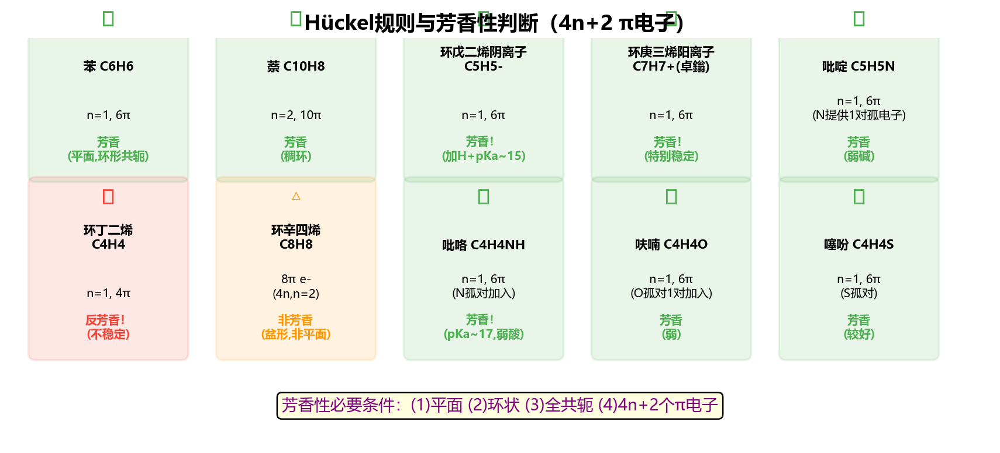
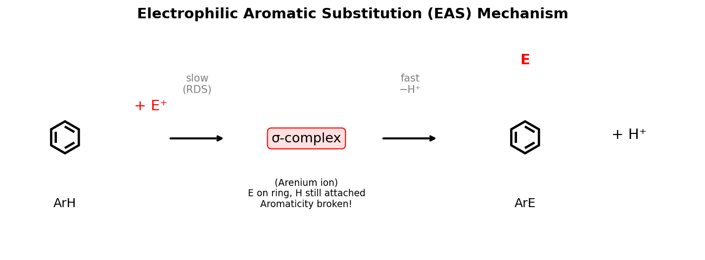
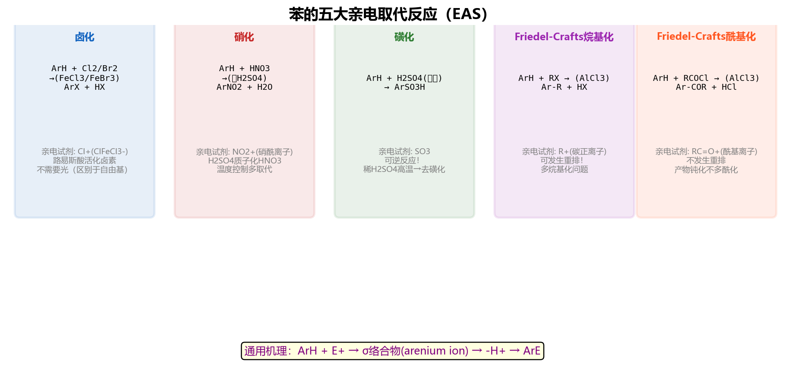
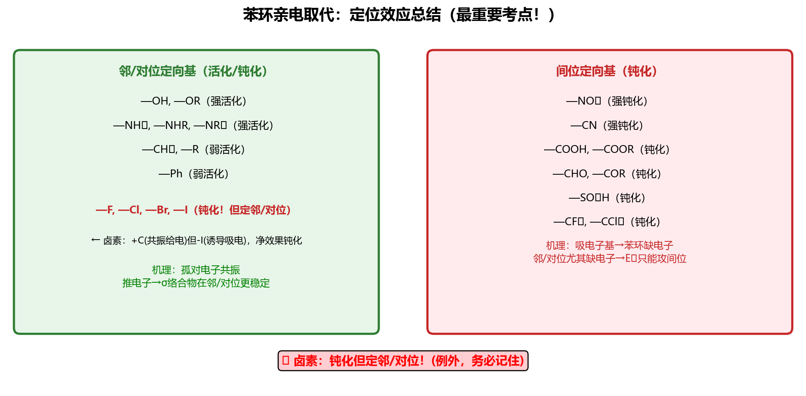
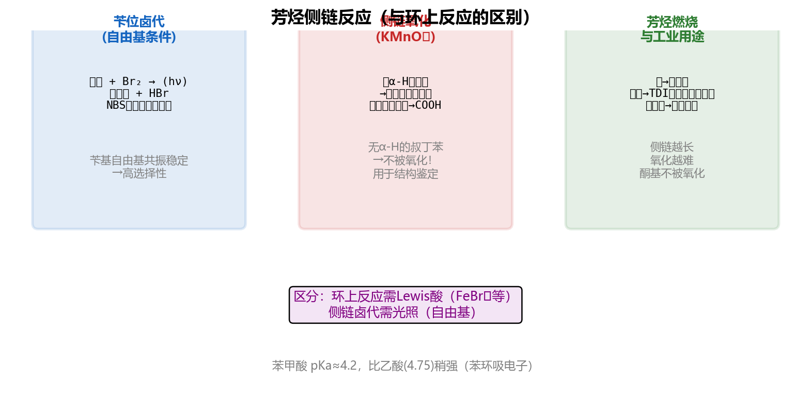
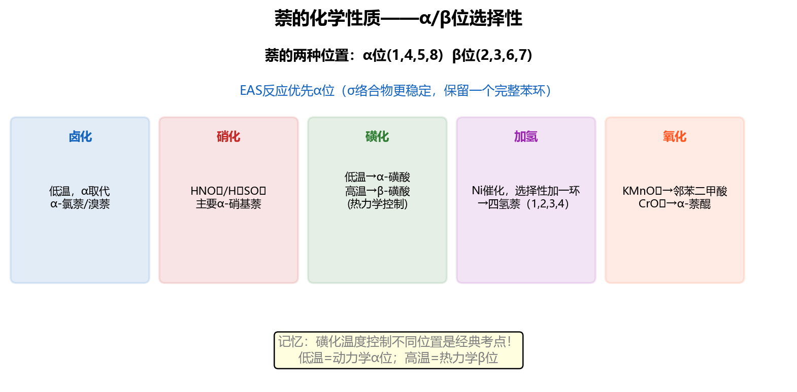

苯的分子式：C6H6，不饱和度 = 4（3个双键 + 1个环）
| 体系 | π电子数 | 4n+2? | 判断 |
|---|---|---|---|
| 苯 | 6 | n=1 ✓ | 芳香 |
| 环丁二烯 | 4 | 4n(n=1) ✗ | 反芳香 |
| 环辛四烯 | 8 | 4n(n=2) ✗ | 非平面→非芳香 |
| 环戊二烯− | 6 | n=1 ✓ | 芳香 |
| 环庚三烯+ | 6 | n=1 ✓ | 芳香 |
| 环丙烯+ | 2 | n=0 ✓ | 芳香 |
| 环丙烯− | 4 | 4n(n=1) ✗ | 反芳香 |
| [10]轮烯 | 10 | n=2 ✓ | 需共平面才芳香 |
| [14]轮烯 | 14 | n=3 ✓ | 芳香 |
| [18]轮烯 | 18 | n=4 ✓ | 芳香 |
轮烯([n]annulene)= 全共轭单环烃 CnHn，判断其芳香性需同时满足：
| 轮烯 | π电子 | 4n+2? | 能否平面? | 结论 |
|---|---|---|---|---|
| [4]轮烯(环丁二烯) | 4 | 4n ✗ | 能 | 反芳香，极不稳定 |
| [8]轮烯(COT) | 8 | 4n ✗ | 能但选择不平面 | 非芳香（避开反芳香） |
| [10]轮烯 | 10 | n=2 ✓ | 环内H位阻大，难平面 | 实际非芳香 |
| [14]轮烯 | 14 | n=3 ✓ | 能（环足够大） | 芳香 |
| [18]轮烯 | 18 | n=4 ✓ | 能（环足够大） | 芳香（近乎等长C-C键） |
[18]轮烯的环电流效应：外侧H化学位移δ=9.28 ppm（去屏蔽），内侧H δ=−2.99 ppm（屏蔽），是芳香性的直接NMR证据。

简单取代基直接命名：甲苯、氯苯、硝基苯、苯酚、苯胺、苯甲酸、苯甲醛等
| 位置关系 | 前缀 | 编号 | 示例 |
|---|---|---|---|
| 1,2- | 邻(ortho-, o-) | 相邻 | 邻二甲苯 |
| 1,3- | 间(meta-, m-) | 间隔一个 | 间二甲苯 |
| 1,4- | 对(para-, p-) | 对面 | 对二甲苯 |
① 生成亲电试剂 E+
② E+ 进攻苯环π电子 → 形成σ络合物（Wheland中间体，芳香性被破坏）
③ σ络合物失去H+ → 恢复芳香性，得到取代产物


| 反应 | 试剂/条件 | 亲电试剂E+ | 产物 | 要点 |
|---|---|---|---|---|
| 硝化 | 浓HNO3/浓H2SO4 | NO2+ | ArNO2 | 混酸，温度控制 |
| 卤代 | Br2(Cl2)/FeBr3(FeCl3) | Br+(Cl+) | ArBr(ArCl) | 必须Lewis酸催化 |
| 磺化 | 发烟H2SO4(含SO3) | SO3 | ArSO3H | 可逆反应！ |
| F-C烷基化 | RCl/AlCl3 | R+ | ArR | 会重排+多取代 |
| F-C酰基化 | RCOCl/AlCl3 | RCO+ | ArCOR | 不重排，一元取代 |
HNO3 + 2H2SO4 → NO2+ + H3O+ + 2HSO4−
Br2 + FeBr3 → Br+·FeBr4−（极化产生亲电性Br）
最后：FeBr4− + H+ → FeBr3 + HBr（催化剂再生）
苯 + HCHO + HCl，ZnCl2催化，60°C → C6H5CH2Cl（苄氯/氯化苄）
强活化：−O−, −NR2, −NHR, −NH2, −OH
中等活化：−NHCOR, −OCOCH3, −OR
弱活化：−CH3(−R), −C6H5
特征规律：与苯环直接相连的原子上有可用于共轭的孤对电子（p轨道中的非键电子对），能通过+C共振效应向环供电子。或者通过超共轭(−R)向环供电子。这些基团总体上提高苯环电子密度（致活），使反应速率比苯更快。
−F, −Cl, −Br, −I
吸电子诱导效应(−I) > 供电子共振效应(+C) → 总体钝化（致钝基团）
但共振效应决定位置（卤素p轨道孤对电子与苯环共轭，稳定邻对位σ络合物）→ 邻对位定位
卤素是唯一的"邻对位定位 + 致钝"类型，是定位效应的特殊例外，考试必须记牢！
强钝化：−NR3+, −NO2, −CF3, −CCl3
中等~强钝化：−CN, −SO3H, −CHO, −COR, −COOH, −COOR, −CONH2
特征规律：与苯环直接相连的原子上含有指向电负性原子的多重键（C=O、C≡N、N=O等），或者直接带正电荷(−NR3+)。这些结构通过−C共振效应和−I诱导效应强烈吸电子，降低苯环电子密度（致钝），使反应速率比苯慢。
| 类别 | 取代基 | 活化/钝化强度 | 定位 |
|---|---|---|---|
| 邻对位定位基 (活化) | −NH2, −NHR, −NR2 | 强活化 | 邻/对位 |
| −OH, −O− | 强活化 | 邻/对位 | |
| −OR, −OCOR | 中等活化 | 邻/对位 | |
| −NHCOR | 中等活化 | 邻/对位 | |
| −R, −C6H5 | 弱活化 | 邻/对位 | |
| 邻对位定位基 (钝化，卤素) | −F | 弱钝化 | 邻/对位 |
| −Cl | 弱钝化 | 邻/对位 | |
| −Br | 弱钝化 | 邻/对位 | |
| −I | 弱钝化 | 邻/对位 | |
| 间位定位基 (钝化) | −NO2 | 强钝化 | 间位 |
| −CF3, −CCl3 | 强钝化 | 间位 | |
| −CN, −SO3H | 强钝化 | 间位 | |
| −CHO, −COR, −COOH, −COOR | 中等钝化 | 间位 | |
| −CONH2, −NR3+ | 中等~强钝化 | 间位 |

| 条件 | 反应类型 | 位置 | 示例 |
|---|---|---|---|
| Lewis酸(FeBr3) | 亲电取代 | 苯环上 | 甲苯+Br2/FeBr3→邻/对溴甲苯 |
| hv / NBS / 高温 | 自由基取代 | 侧链α-H | 甲苯+Br2/hv→苄基溴(C6H5CH2Br) |
| KMnO4 | 氧化 | 侧链→COOH | 甲苯→苯甲酸 |

苯 + O2，V2O5催化，500°C → 顺丁烯二酸酐（马来酸酐）
苯 → 1,4-环己二烯（部分还原，保留两个非共轭双键）
供电子基(EDG)取代苯（如 -OCH3, -CH3）：
产物：取代基连在双键碳上（2,5-二氢产物）
例：苯甲醚(C6H5OCH3) → 1-甲氧基-1,4-环己二烯（2,5-二氢苯甲醚）
OCH₃ OCH₃
| |
/===\ Na/NH₃ /==\
|| || ------→ | |
\===/ EtOH \==/
1,4-二烯（C1=C2, C5=C6未被还原）
解释：EDG增加苯环电子密度 → 电子不易被加上 → 还原发生在EDG远端（C3,C6位被还原加H）→ EDG所在碳保留在双键上。
吸电子基(EWG)取代苯（如 -COOH, -COOR, -COR）：
产物：取代基连在非双键碳（sp3碳）上（1,4-二氢产物）
例：苯甲酸(C6H5COOH) → 1-羧基-2,5-环己二烯-1-羧酸 → 2,5-环己二烯-1-羧酸（1,4-二氢苯甲酸）
COOH COOH
| |
/===\ Na/NH₃ H-C-H
|| || ------→ /==\
\===/ EtOH || ||
\==/
1,4-二烯（C2=C3, C5=C6未被还原）
解释：EWG降低苯环电子密度 → 电子易加到EWG所在碳 → 还原发生在EWG近端（C1位被还原加H）→ EWG所在碳变为sp3，双键移到C2=C3和C5=C6位。
分子式：C10H8，10个π电子（4n+2, n=2），具有芳香性

| 名称 | 环数 | π电子数 | 特点 |
|---|---|---|---|
| 萘 | 2 | 10 | 芳香性比苯弱，反应活性更高 |
| 蒽 | 3(线形) | 14 | 9,10-位最活泼（中间环双键性最强） |
| 菲 | 3(角形) | 14 | 9,10-位最活泼（该键键长0.134nm，接近双键） |
蒽和菲的取代、氧化、还原都优先发生在9,10-位：
(a) 环戊二烯负离子 (C5H5−)
分析：5个碳原子均为sp2杂化，各贡献1个p轨道参与共轭。5个碳上分配的π电子：4个碳各贡献1个电子(来自双键)，带负电荷的碳贡献2个电子(孤对电子进入p轨道)。
π电子总数 = 6个（4n+2, n=1）
环状共轭 ✓ | 共平面 ✓ | 4n+2 ✓ → 芳香性
这解释了环戊二烯的酸性(pKa≈16)远强于一般烃——失去H+后生成芳香性稳定阴离子。
(b) 环戊二烯正离子 (C5H5+)
分析：5个碳sp2杂化，正电荷碳的p轨道为空。
π电子总数 = 4个（4n, n=1）
环状共轭 ✓ | 共平面 ✓ | 4n → 反芳香性，极不稳定
这就是为什么环戊二烯极难失去H−形成正离子——产物反芳香，能量极高。
(c) 环丙烯正离子 (C3H3+)
分析：3个碳sp2杂化，正电荷碳p轨道空。2个碳各贡献1个π电子。
π电子总数 = 2个（4n+2, n=0）
环状共轭 ✓ | 共平面 ✓ | 4n+2 ✓ → 芳香性
这是最小的芳香体系！环丙烯正离子盐(如C3H3+Cl−)确实能被制备并稳定存在。
(d) 环辛四烯 (C8H8, COT)
分析：8个π电子，4n(n=2)。若平面共轭将为反芳香(极不稳定)，因此分子采取船式(tub-shaped)非平面构象，交替单双键，p轨道不连续重叠。
非平面 → 不满足Hückel规则前提 → 非芳香性（既非芳香也非反芳香）
COT的化学性质类似普通多烯：能使Br2/CCl4褪色，可加氢。有趣的是，COT2−(接受2个电子后变为10π，且变平面)具有芳香性。
(e) 吡咯
分析：吡咯是五元含氮杂环。4个碳和1个氮均sp2杂化，N的孤对电子进入p轨道参与共轭（N不是用孤对做碱，而是贡献给芳香体系）。
4个C各贡献1个π电子 + N贡献2个π电子 = 6个π电子（4n+2, n=1）
环状共轭 ✓ | 共平面 ✓ | 4n+2 ✓ → 芳香性
这解释了吡咯的碱性极弱(pKb≈13.6)——N的孤对电子参与芳香π体系，不能再接受质子(接受H+将破坏芳香性)。与之对比，吡啶的N孤对电子在sp2轨道中（不参与π体系），碱性正常。
(a) 甲苯 + HNO3/H2SO4
(b) 硝基苯 + Br2/FeBr3
(c) 苯甲醚 + CH3COCl/AlCl3
(d) 苯酚 + Br2/H2O（过量）
(e) 萘 + Br2/FeBr3（低温）
(f) 萘 + SO3/H2SO4（160°C）
(a) 甲苯 + HNO3/H2SO4 → 邻硝基甲苯 + 对硝基甲苯
-CH3为弱活化邻对位定位基（超共轭供电子），NO2+进入邻位和对位。邻:对比例约58:37（对位因位阻较小略少于统计预测的2:1）。反应速率比苯快约25倍。
(b) 硝基苯 + Br2/FeBr3 → 间溴硝基苯
-NO2为强钝化间位定位基（强-I和-C效应使邻对位电子密度大幅降低）。Br+进入间位（实际是间位被钝化最少）。反应速率比苯慢约106倍，需要较强条件。
(c) 苯甲醚(C6H5OCH3) + CH3COCl/AlCl3 → 对甲氧基苯乙酮
-OCH3为强活化邻对位定位基（O的孤对电子通过+C效应向环供电子）。酰基正离子CH3CO+进入对位为主（邻位有-OCH3的位阻）。F-C酰基化不重排、只得一元取代产物。
(d) 苯酚 + Br2/H2O（过量） → 2,4,6-三溴苯酚（白色沉淀）
-OH为极强活化邻对位定位基。苯酚活性极高，无需Lewis酸催化，在水溶液中Br2即可直接反应。由于活性太强，三个邻对位全部被溴代。这是鉴别苯酚的经典反应。
注意：若要得到一元溴代产物，需要降低活性：在CS2低温中用恰好1当量Br2，得对溴苯酚为主。
(e) 萘 + Br2/FeBr3（低温） → 1-溴萘（α-溴萘）
低温属于动力学控制。α位取代的σ络合物中间体更稳定（正电荷有更多共振结构分散，不破坏完整苯环的共振结构有2个 vs β位的1个）。因此α位取代活化能低，动力学有利。
(f) 萘 + SO3/H2SO4（160°C） → β-萘磺酸（2-萘磺酸）
高温属于热力学控制。磺化是可逆反应！在160°C高温下，α-萘磺酸可以脱磺酸后重新磺化。β位产物位阻更小、热力学更稳定（peri位无H-H排斥）。长时间高温达到热力学平衡后，β-产物占优。
活性排序（由高到低）：
苯酚(-OH) > 苯甲醚(-OCH3) > 甲苯(-CH3) > 苯(-H) > 氯苯(-Cl) > 硝基苯(-NO2)
分析：
定位效应：苯酚、苯甲醚、甲苯 → 邻对位定位（活化）；氯苯 → 邻对位定位（钝化）；硝基苯 → 间位定位（钝化）
4-甲基苯甲酸结构：1位-COOH，4位-CH3
定位分析：
两个基团定位一致：都指向3位和5位！（协同定位）
结论：新的-NO2进入2位（即-COOH的邻位=-CH3的间位）。
等等——重新分析：-CH3在4位，其邻位=3,5位；-COOH在1位，其间位=3,5位。两者一致指向3位(或等价的5位)。
但还要考虑位阻：3位紧邻1位的-COOH，不利；5位空间更开阔。
最终答案：主要产物为2-硝基-4-甲基苯甲酸（NO2进入2位）——因为-CH3活化能力 > -COOH钝化能力，-CH3的邻位(3位)和对位(1位已占)中，实际上最可能位置是-CH3的邻位=3位，也就是-COOH的间位，产物为3-硝基-4-甲基苯甲酸。由于分子的对称性，3位=5位等价时不等价（3位邻近COOH），实际主产物为在2位硝化（-CH3的间位，但也是-COOH的邻位）。
正确分析：当两个定位基矛盾时（-CH3活化 vs -COOH钝化），以活化能力强的-CH3为主。-CH3在4位，其邻位=3,5位。同时3位也是-COOH的间位（一致！）。主产物：3-硝基-4-甲基苯甲酸。一般不进入两个基团之间的拥挤位置(2位)。
目标：Br在对位，NO2在1位（即对位关系）。
正确路线（先硝化再溴代——错误！先溴代再硝化——也要分析）：
分析两种顺序：
方案A：先硝化 → 硝基苯 + Br2/FeBr3 → 间溴硝基苯（-NO2间位定位）❌ 得到间位，不是对位！
方案B：先溴代 → 溴苯 + HNO3/H2SO4 → 邻硝基溴苯 + 对硝基溴苯（-Br邻对位定位）✓ 取对位产物即可！
正确路线：
① 苯 + Br2/FeBr3 → 溴苯
② 溴苯 + HNO3/H2SO4 → 对溴硝基苯（-Br为邻对位定位，取对位主产物）
为什么顺序重要：-Br是邻对位定位基，能把-NO2引到对位。若先引入-NO2（间位定位基），Br只能进间位，永远得不到对位产物。
分析：-C2H5是邻对位定位基，-Cl也是邻对位定位基。两个邻对位定位基不可能通过简单连续取代得到间位产物！需要间接方法。
策略：利用-COCH3（间位定位基）先定位，再还原为-C2H5
① 苯 + CH3COCl/AlCl3 → 苯乙酮（F-C酰基化）
② 苯乙酮 + Cl2/FeCl3 → 间氯苯乙酮（-COCH3为间位定位基，Cl进间位）
③ 间氯苯乙酮 + Zn-Hg/HCl(Clemmensen还原) → 间氯乙基苯
为什么不能直接做：
• 先引入-C2H5再氯代 → -C2H5是邻对位定位 → 得到邻/对氯乙基苯 ❌
• 先氯代再引入-C2H5 → -Cl也是邻对位定位 → F-C烷基化进入邻对位 ❌
• 唯一方法：利用酰基（间位定位基）先定位Cl到间位，然后还原酰基为烷基。
两个间位定位基处于对位关系——不能通过先引入一个间位定位基再定位另一个得到对位产物。需要利用-CH3的邻对位定位。
正确路线：
① 甲苯 + HNO3/H2SO4 → 对硝基甲苯（-CH3邻对位定位，取对位产物）
② 对硝基甲苯 + KMnO4/H+,Δ → 对硝基苯甲酸（氧化侧链-CH3→-COOH）
为什么不能反过来：
若先氧化甲苯为苯甲酸(-COOH间位定位)，再硝化 → NO2进入间位 → 得到间硝基苯甲酸 ❌
核心原则：-CH3先当"邻对位定位代理人"，引导-NO2到对位后，再氧化为-COOH。顺序决定成败！
直接三次溴代苯不可行：第一个Br是邻对位定位，第二个Br进入第一个的邻/对位，最终得到1,2,4-三溴苯而非1,3,5。
策略：利用苯胺的强活化性 + 重氮化脱氨
① 苯 + HNO3/H2SO4 → 硝基苯
② 硝基苯 + Fe/HCl → 苯胺（还原-NO2为-NH2）
③ 苯胺 + 3Br2/H2O → 2,4,6-三溴苯胺（-NH2极强活化，邻对位全部溴代，无需催化剂）
④ 2,4,6-三溴苯胺 + NaNO2/H2SO4, 0°C → 重氮盐
⑤ 重氮盐 + H3PO2（次磷酸）→ 1,3,5-三溴苯 + N2↑
为什么这样设计：
• -NH2作为"超强活化+导向基"，一次性把三个邻对位全部溴代（得到1,3,5-三溴相对于NH2）
• 重氮化-脱氮反应(用H3PO2还原)去除-NH2，只留下三个Br
• 这是"导向基安装-使用-拆除"的经典策略
路线一（经对硝基甲苯）——最经典方法：
① 苯 + CH3Cl/AlCl3 → 甲苯
② 甲苯 + HNO3/H2SO4 → 对硝基甲苯（-CH3邻对位定位，取对位）
③ 对硝基甲苯 + KMnO4/H+,Δ → 对硝基苯甲酸（氧化侧链）
④ 对硝基苯甲酸 + Fe/HCl（或H2/Pd） → 对氨基苯甲酸（还原-NO2为-NH2）
逻辑：用-CH3的邻对位定位引入-NO2 → 氧化-CH3 → 还原-NO2
路线二（经对溴甲苯→Grignard）：
① 苯 + CH3Cl/AlCl3 → 甲苯
② 甲苯 + HNO3/H2SO4 → 对硝基甲苯
③ 对硝基甲苯 + KMnO4 → 对硝基苯甲酸
④ 还原 → 对氨基苯甲酸
（路线二本质相同，展示了这是最优策略）
为什么不能直接从苯胺出发？
苯胺(-NH2是强活化邻对位定位基) + 引入-COOH？F-C酰基化不能用于胺（-NH2与AlCl3配位使催化剂失活）。即使能反应，也只能到邻/对位，而非间位。所以必须走间接路线。
(a) 甲苯 + Cl2/hv → C6H5CH2Cl（苄基氯/氯化苄）
机理：自由基链式反应
• 引发：Cl2 →(hv)→ 2Cl·
• 传递：C6H5CH3 + Cl· → C6H5CH2·(苄基自由基) + HCl
• C6H5CH2· + Cl2 → C6H5CH2Cl + Cl·
苄基自由基因与苯环共轭而特别稳定，所以侧链α-H优先被取代。
(b) 甲苯 + Cl2/FeCl3 → 邻氯甲苯 + 对氯甲苯
机理：亲电芳香取代
FeCl3活化Cl2产生Cl+亲电试剂 → 进攻苯环π电子 → σ络合物 → 失去H+恢复芳香性。
-CH3为邻对位定位基，Cl进入邻位和对位。
总结：同一底物（甲苯）+ 同一试剂（Cl2），仅催化条件不同，产物完全不同！这是考试必考的辨析点。
产物：苯甲酸 C6H5COOH（不是苯乙酸C6H5CH2COOH！）
规律：KMnO4氧化芳烃侧链时，无论侧链有多长，都从α碳断裂，最终侧链变为-COOH。
前提：侧链必须有α-H（苄位氢），氧化从Cα-H键的均裂开始。无α-H的叔丁基苯完全不被氧化。
苯甲醚（供电子基-OCH3）的Birch还原：
Na/液NH3/EtOH → 2,5-二氢苯甲醚（1-甲氧基-1,4-环己二烯）
-OCH3所在碳保留在双键上（sp2不变）。还原发生在远端的C3和C6位。
解释：供电子基增加苯环电子密度 → 电子不易被加上 → 还原发生在EDG远端 → EDG碳保持sp2。
苯甲酸（吸电子基-COOH）的Birch还原：
Na/液NH3/EtOH → 2,5-环己二烯-1-羧酸（1,4-二氢苯甲酸）
-COOH所在碳变为sp3（失去双键），双键移到C2=C3和C5=C6位。
解释：吸电子基降低苯环电子密度 → 电子容易加到EWG所在碳 → 还原发生在EWG近端 → EWG碳变为sp3。
记忆口诀：供电子"留双键"（取代基碳上有双键），吸电子"去双键"（取代基碳上双键被还原掉）。两种产物都是1,4-环己二烯型（非共轭二烯）。
第一步：分析分子式
C9H12，不饱和度 = (2×9+2-12)/2 = 4，恰好等于苯环(3双键+1环=4)，说明只有苯环无其他不饱和结构。
第二步：分析氧化产物
KMnO4氧化只得到一种产物：苯甲酸(C6H5COOH)——即只有一个-COOH。
这意味着苯环上只有一条侧链被氧化为-COOH。
第三步：确定侧链
C9H12 - C6H5(苯环) = C3H7（一条丙基侧链）
只有一种氧化产物 → 只有一条侧链 → A为丙基苯
但丙基可以是正丙基或异丙基：
两者都只给一种产物（苯甲酸），仅靠此条件无法区分。但若题目强调"只得到一种产物"是排除其他C9H12异构体的条件：
但这些产物都不是苯甲酸！所以A必须是正丙基苯或异丙基苯（均给苯甲酸一种产物）。
第一步：列出C8H10的异构体
不饱和度 = (2×8+2-10)/2 = 4 → 苯环。C8H10 - C6H4 = C2H6（两个甲基或一个乙基）
第二步：分析每种异构体硝化产物数目
对二甲苯：分子对称性最高。两个-CH3协同定位，硝化只能进入2位（=3位等价）→ 1种产物 → A = 对二甲苯
邻二甲苯：-CH3在1,2位。硝化可进入3位或4位(两者不等价) → 2种产物
乙苯：-C2H5在1位。硝化进入邻位(2位)或对位(4位)（注意2位和6位因乙基不对称而不等价？不对，乙苯中2位=6位等价，所以邻位和对位 → 2种产物）
间二甲苯：-CH3在1,3位。硝化可进入2位、4位、5位(4位=6位等价？不对——4位≠5位) → 实际可能位置：2位(两个CH3之间)、4位(=6位)、5位 → 3种产物
最终答案：
A(1种产物) = 对二甲苯
B(2种产物) = 邻二甲苯（或乙苯）
C(2种产物) = 乙苯（或邻二甲苯）
D(3种产物) = 间二甲苯